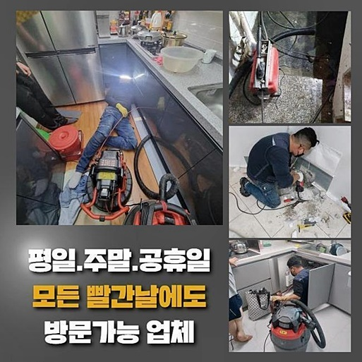
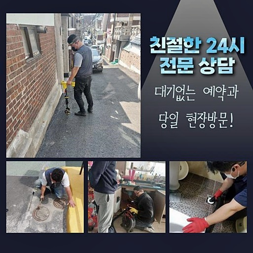
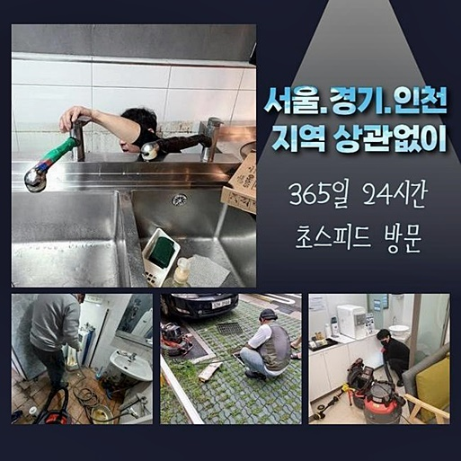
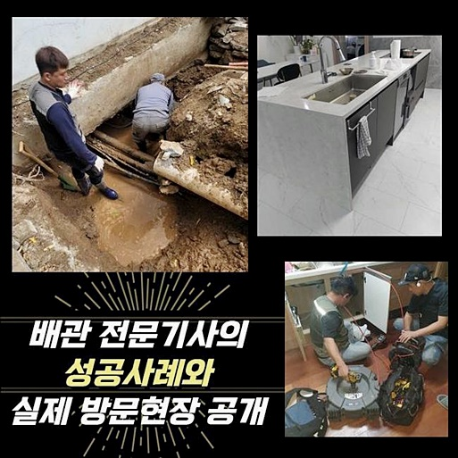
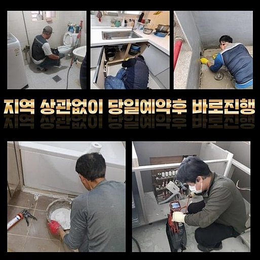
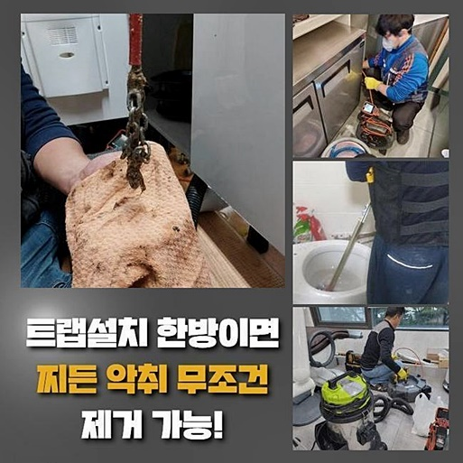
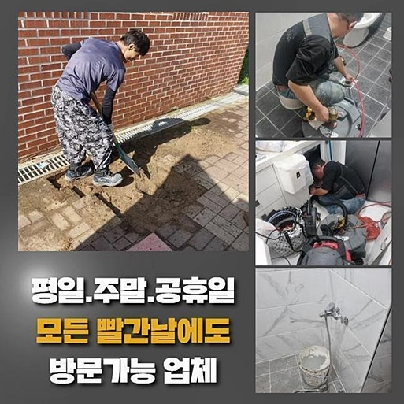

🏠 성북구 종암동욕실막힘 보문동 집수정청소 설비하는곳
용인시 처인구 배관막힘 전문 시공 후기

📋 작업 개요
- 위치: 용인시 처인구, 수원시 영통구, 화성시 동탄
- 서비스 유형: 배관막힘, 고압세척, 내시경점검
- 작업 일시:
- 업체명: 하수구수사대 (010-5615-2118)
🔍 문제 상황
성북구 종암동욕실막힘 보문동 집수정청소 설비하는곳
여러 세대가 동시에 살고있는 형태라면 여러가지 사연으로 물이 차단되고 막혀버리죠
오늘 소개할 곳은 중간 정도 층수의 빌라였어요 최하단의 층수에서 하수구가 차단돼서 어려움을 느끼는 상태라고 보였습니다
하수의 이동경로가 막히고 역류 증세가 나타난다면 가장 아래의 층수에서 처음으로 감지될 때가 많습니다
밑집이 손해를 입는 사유를 생각해보면 배관이 지니고 있는 구조적 특성 때문입니다
생활용수를 급수하고 폐수하는 절차를 부드럽게 전달되도록 하려면 여러 가지 배관들과 주 배관이 일정한 물의 길로 향하는데요
기다랗게 이어진 배관들은 결국 한 곳으로 물을 모으기에 이물질이 어떤 깊이에서 껴서 정상적인 배출이 중단되고 이상 증세가 만들어져 버린다면 특정 가정에만 오류가 외관상 보이지 않고 많은 호실들에서 일제히 동일한 경우가 있기도 합니다
하수가 거꾸로 새기도 하는 등 배관 어딘가가 막혀있는 파이프의 작동 이슈때문에 아래의 층수에서 손해를 극심하게 감당하고 계셨습니다
하수구의 이상을 감지하신 관리인 직원분이 배관이 막힌 상황이라고 빨리 고쳐달라고 요청을 주셨습니다
통수가 순탄하게 수행되지 않았기 때문에 건물의 모든 거주자에게 난감함이 전달되고 있는 상황에 직면하셨습니다
대강 피해사례를 들었던 내용을 분석해서 어떤 식으로 작업을 전개할지 그렸고 피해자가 많은 만큼 각오를 단단히하고 고객님께로 달려갔습니다

🔎 원인 분석
💡 전문가 진단: 정밀 진단 장비를 사용하여 슬러지의 고착 여부를 판명하고 타격/세척 작업을 실시했습니다.
건물의 하수곤란이 생기는 것은 새벽대라고 하더라도 건물의 양식을 가리지 않고 발현이 될 수 있어요
설비가 새것이라 할지라도 하수구를 깨끗하게 쓰는 법에 조금이나마 신경을 써서 잘못된 낌새가 보일 때 조속하게 대처할 수 있는 지식을 든든하게 알아두는 것이 바람직할 것입니다
장기간 근무를 해오면서 비상사태거나 고난이도 현장이라도 정확하게 상황을 진단하고 해소를 해드리고 있으니 마음 편히 접수를 하시면 되겠습니다
알려주신 현장에 방문하면 업무의 첫 단계로써 사정이 왜 꼬이게 되었나 심혈을 기울여 파악합니다
전화로도 이야기를 들었지만 전문적 안목으로 보았을 때 잘못됐다 싶은 점들은 다르게 읽힐 수 있기에 사전 점검이 중요한 겁니다
뚫기에 급급하는 것보다 무엇이 오류를 만들었나 알아야만 업무에 대한 완결도가 증폭될 수 있어요
난리통을 방불케 하는 장소의 구석구석을 보면서 건물에서 나타나는 증상들을 속 시원하게 타파할 수 있을만한 해결책을 물색해 봐요
탐사장치를 활용해서 중앙 배관을 관측해 나가면서 오류를 부른 뿌리를 발굴해 나갔습니다
정말 다량의 하수가 명쾌하게 통수되지 못한 점은 오랜시간 똘똘 뭉쳐왔던 잔해물 덩이가 빈틈 없이 차단했기 때문입니다
이런 사정으로 물을 약간만 내려 보내더라도 겉으로 치솟으면서 두꺼운 중앙 배관과 제일 가까운 지점에 있는 가장 아래의 층수에서 물이 바깥으로 터져나오는 현상이 금방 촉발된 것이죠!
하수구 설비를 담당해 오며 여러 현장들에서 여러 막힘들을 해결지었던 경험들이 계속해서 쌓여오면서 지식과 다분히 농축된 노하우로 화를 불러온 지점과 그에 걸맞는 해결법을 발견해 내게 됩니다
이런 배관을 지나서 물을 내려보내면서 음식물과 같은 더러운 불순물이 섞이는데요!

🔧 작업 과정
계속해서 양의 불어나면서 하수관의 이상을 불렀다고 예측할 수 있었어요
끼인 이물을 걷어내는 업무로 본질적인 씨앗을 소거시키는 것이 시급하다고 사료되었습니다
이처럼 사유를 명확하게 알아내는 조사 단계가 선행해서 풀어야 할 문제이니 저희의 배관 카메라를 배치시켜서 내부를 샅샅이 들여다보는 일을 먼저 실시해 보았는데요
내시경이라고 하면 보통은 건강검진에서 활용하는 받아들이시지만 배수로의 전용으로 개발된 기계입니다
파이프는 매우 길이가 길어서 눈으로 들여다 보는 방법으로는 심층부의 상황까지는 알아차리기가 까다로운 구조를 갖고 있기에 이런 환경의 내부 상황을 실시간으로 중개하는 전문성있는 기기를 써야 해요
능력이 뛰어난 기기의 긴요성은 하수구를 작은 흠집도 내지 않고 순조롭게 배관 장애를 나아갈 수 있도록 돕기 때문이죠!
충분한 이해도나 베이스 없이 하는 장비의 이용은 하수구에 오히려 타격을 가해버려서 하수시설의 전면 교체라는 오래 소요되는 공사를 부릅니다
침전물을 형성한 내용물과 외형과 규모를 모두 관측과정에서 수렴했다면 작업 로드를 꾸리는데 큰 보탬이 됩니다
전문업체를 알아보신다면 오랜 업력으로 빚어진 노하우를 보유한데다 구체적으로 수행할 때 필요한 장치 보유 여부를 간략하게나마 훑어보신 이후에 신중하게 판단하시길 바랍니다
단독주택은 배수관이 일정하게 만들어 지지 않았고 길이나 폭도 전부 다르고 다발적인 문제가 있기도 합니다
그렇기 때문에 내면 상태를 분석하는 검사를 할 시에는 구간별로 샅샅이 봐야하고 특정 지점에서 분명한 사유가 있다해도 가볍게 중단하는 게 아니라 연계된 모든 파이프들을 함께 검사해야 합니다
고장난 위치들을 모조리 알아차렸다면 관로 속으로 무슨 툴을 활용하여 주범을 뚫어버릴 건지 전략을 수립해야 합니다
방해 요소를 걷어올리려는 목적으로 투입되는 기계는 종류가 많지만 상황에 맞게 이용해야만 고질적인 장애물을 속 시원하게 제거할 수 있죠
체크를 통하여 문제가 심각도가 있는 오염부를 지정하여 방해 요소를 걷어올리려는 목적으로 물줄기를 통해 씻어내리는 경로를 점차 회복시켜 나갔습니다
찌꺼기들이 단단하게 누적된 파트가 간혹 보인다면 회전력이 제대로인 샤프트를 넣어서 가동하여 해결을 보는데요
이 기계는 내부에 상당한 사이즈로 불어난 딱딱한 덩어리를 자잘하게 썰어주고 휘감아 꺼내는 식으로 세척에 도움을 줍니다
뻥 뚫리게 만들어 주고서 센 물살을 활용해서 하수구의 이곳저곳을 깨끗이 청소를 해주는데요
잔여물이 전혀 없어야만 배관 내부로 기름 슬러지가 형성되지 않는 쾌적함이 형성되는 것입니다


✅ 작업 완료
흡수력이 좋은 석션기로 유연하게 풀어진 오염물들을 조금도 남지 않게 외부로 유출시켰습니다
대충해서 잔해가 남아버려서 배관이 또 막히면 허용될 수 없는 문제이므로 중간 점검을 위한 카메라를 배치시켜서 잔해물이 남지않게 신중히 조사했어요
하수도는 여러군데에서 폐기된 찌꺼기가 모여드는 파트인 만큼 늘상 위생에 염두를 두어야 합니다
전문적인 점검을 실시하면서 필요 시 뚫는 시공도 해준다면 물을 못 쓰는 안타까운 일 없이 설비를 활용하실 수 있어요
하수구의 불통 이슈로 인해 자주 스트레스를 받으신다면 늦은 시간이라도 상관이 없으니 의뢰를 맡겨주시면 감사하겠습니다




⚠️ 하수구 배관 막힘 예방 및 관리 가이드
- ✅ 머리카락, 비닐, 물티슈 등 물에 분해되지 않는 이물질은 절대 흘려보내지 마세요.
- ✅ 기름기 많은 식기는 설거지 전 키친타올로 먼저 기름때를 닦아내세요.
- ✅ 주기적으로 배수구에 뜨거운 물을 가득 부어주어 유지방 고착을 방지하세요.
- ✅ 작업 후 1년 이내 재발 시 무상 A/S 보증 서비스를 제공합니다.
💡 핵심 정리
- 확실한 장비 작업(내시경 점검 및 샤프트 스케일링)으로 원인을 뿌리 뽑습니다.
- 작업 후 1년 이내에 동일한 부위 재발 시 100% 무상 A/S 서비스를 보장합니다.
- 서울 · 경기 · 인천 전 지역에 24시간 언제든 긴급 출동할 수 있도록 항시 대기 중입니다.
❓ 자주 묻는 질문 (FAQ)
🚨 용인시 처인구 배관막힘 문제로 고민이신가요?
정확한 원인 진단과 확실한 시공으로 재발 없는 해결을 약속드립니다.
24시간 긴급 출동 | 서울 · 경기 · 인천 전지역 | 1년 내 재발 시 무상 A/S